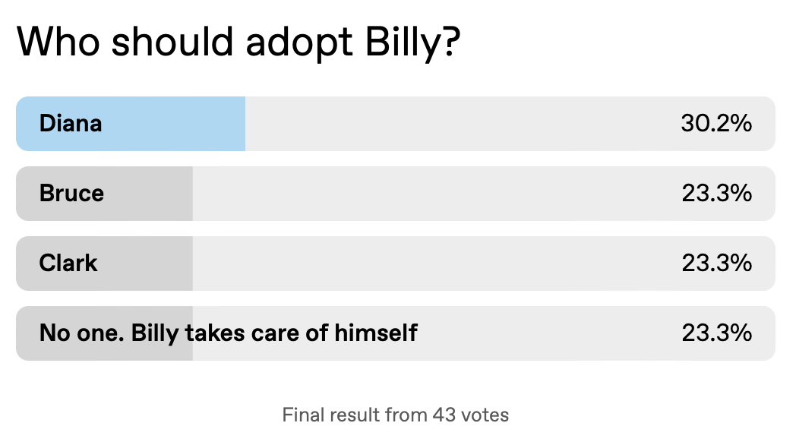
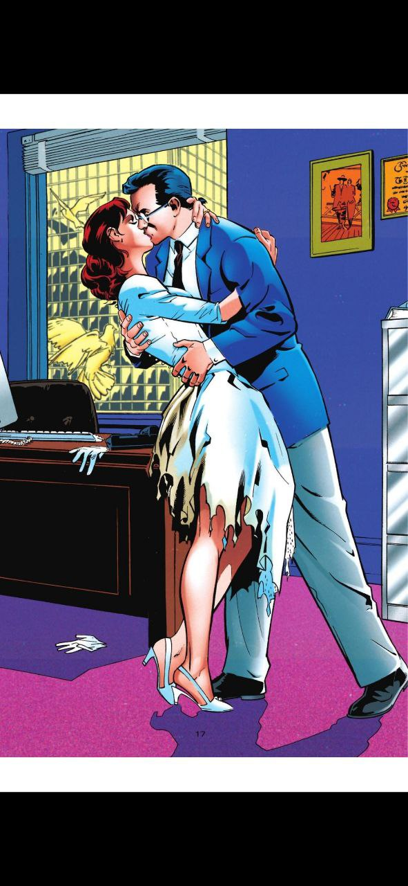

I write Billy Batson Fan Fics on AO3. My latest fan fiction, the Fate of Billy Batson was born out of this poll I created on Tumble.Who adopts Billy?. Since Diana won, but the results were very close, Batman, Superman and Wonder Woman each gets a week with Billy, before he finally decides to let Diana adopt him. This fic is still in progress.
Comics Canon:
In Batman Catwoman Issue twelve by Tom King, Bruce Wayne marries Selina Kyle. They have a daughter, Helena Wayne who eventually trains as and becomes a Bat.
My Fanfic:
Batman's Week
The Fate of Billy Batson Chapters 2 and 3 features Billy's stay as a son of Bruce Wayne and how Captain Marvel adapts to the Bats. The no meta in Gotham policy applies here, so he has to follow certain ground rules in this slapstick section.
Helena is a little girl with all of Selina's spunk and a little girl's insecurity and jealousy of the new, favoured addition to the family.
Comics Canon:
In Superman, The Wedding Album, Lois Lane shows why she's a great match for Superman. With all his enemies, he needs to know his wife can take care of herself. Lois more than qualifies. This is the version of Lois Lane in the fic. During this story, Clark lost his powers temporarily. My fan fic is set before that happened.
My Fanfic:
Superman's Week
Clark brings Billy to his apartment and introduces him to the love of his wife Lois Lane in Chapter 4 of The Fate of Billy Batson. He shows Billy all aspects of his life and really makes his pitch. The two get along so well, Billy wants to just go with Clark & Lois but Captain Marvel always keeps his word so Wonder Woman gets her week next.

Comics Canon:
In Wonder Woman by George Perez, Wonder Woman was born of clay. Yet in later versions, she's the daughter of Zeus and Hippolyta. I'm going with the illegitimate Daughter of Zeus version, but in which he acknowledges her as his daughter and welcomes her in Mount Olympus.
My Fanfic:
In Chapter 5: The Amazon's Son, Diana welcomes Billy to her apartment, taking over the care of the boy from Superman. She brings him to Themyscira where disaster happens.
Comics Canon:
In Captain Marvel Adventures #73, Zeus sprains his shoulder throwing lightning bolts at Billy every time he shouts Shazam with comical results.
My Fanfic:
This is the version of Zeus, and by extension, Olympus I'll go with. In the old comics, Solomon, Hercules, Atlas, Zeus, Achilles and Mercury all hang out together on Mount Olympus. I'm not too familiar with Greek mythology so I'll just go with the old Captain Marvel Adventures portrayal of these characters, adding on DC's portrayal of some of the other Olympians.